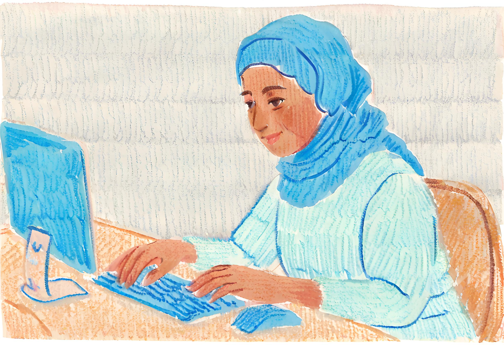

Step 1. The research question
Overview
A health data scientist is someone who answers questions about health using data and analytics. This encompasses questions about patient well-being, diseases, treatments, medications, health systems, and many other areas of clinical and medical interest.
The first step in any health data analysis is understanding the research question. Once the question is clear, the relevant data and necessary analytic approaches will fall in to place much more quickly.
In this guided tutorial, you will be addressing two research questions:
What is the relationship between smoking during pregnancy and a child’s birthweight?
Can maternal factors measured during pregnancy (including smoking) be used to accurately predict infants at risk of low birthweight?
Below you can read about why understanding and predicting low birthweight is an important research goal, the types of factors that might influence birth, and how birthweight is recorded and reported in Australia.

Why Study Birthweight?
Birthweight is a crucial indicator of a newborn’s health and well-being. It serves as a fundamental metric in assessing a baby’s initial growth and development. Moreover, birthweight plays a pivotal role in predicting the infant’s short-term and long-term health outcomes. Babies born with low birthweight, typically defined as weighing less than 2,500 grams (5.5 pounds) at birth, face increased risks of complications, developmental issues, and chronic health conditions.
Factors Influencing Low Birthweight
There are many factors that contribute to birthweight and may be useful to help predict infants at risk of low birthweight:
Maternal Nutrition: Adequate maternal nutrition is paramount for the proper growth and development of the fetus. Poor maternal nutrition, whether due to malnutrition or inadequate dietary intake, can result in low birthweight.
Maternal Health Conditions: Certain maternal health conditions, such as hypertension, diabetes, and infections, can impact fetal growth and contribute to low birthweight. Managing and treating these conditions during pregnancy is crucial for the well-being of both the mother and the baby.
Lifestyle Factors: Maternal lifestyle choices, including smoking, alcohol consumption, and illicit drug use, have been linked to low birthweight. These substances can negatively affect fetal development and increase the risk of complications.
Multiple Pregnancies: Twins, triplets, or other multiple pregnancies are at a higher risk of low birthweight due to the shared resources in the womb.
Other Factors: Other factors, such as limited access to healthcare, or health education, can contribute to low birthweight. Understanding these social determinants of health allows for targeted interventions to address disparities.
You will learn about how different types of health data are collected and used in the Australian health system in the course HDAT9100 Context for Health Data Science.
Birthweight in context
For births occurring in hospitals, the birthweight will almost always be recorded in a clinical information system, and then transferred in electronic form to the centralised perinatal Data Collection operated by NSW Health. For home births and births in some very small hospitals, the data may have been submitted via a paper or web-based form. Understanding the provenance of data is a key part of every health data analysis.
In New South Wales, data on birthweight are routinely captured in the Perinatal Data Collection, a population-based surveillance system covering all births in NSW public and private hospitals, as well as home births. It encompasses all live births, and stillbirths of at least 20 weeks gestation or at least 400 grams birthweight.
Birthweight statistics are regularly reported on, for example in the annual Mothers and Babies reports, produced by NSW Health. Birthweight is also the subject of numerous academic studies, for example, the recent journal article Smoking Cessation during the Second Half of Pregnancy Prevents Low Birth Weight among Australian Born Babies in Regional New South Wales1
Test your understanding
Test your understanding by answering these questions based on the information above.
True or False A boy born weighing 2.2kg would be classified as low birthweight?
Choose the correct answer Which of the following is not a risk factor for low birthweight?Next steps
 Step 2. Curating the data
Step 2. Curating the data Footnotes
Ghimire, P.R.; Mooney, J.; Fox, L.; Dubois, L. Smoking Cessation during the Second Half of Pregnancy Prevents Low Birth Weight among Australian Born Babies in Regional New South Wales. Int. J. Environ. Res. Public Health 2021, 18, 3417. https://doi.org/10.3390/ijerph18073417↩︎